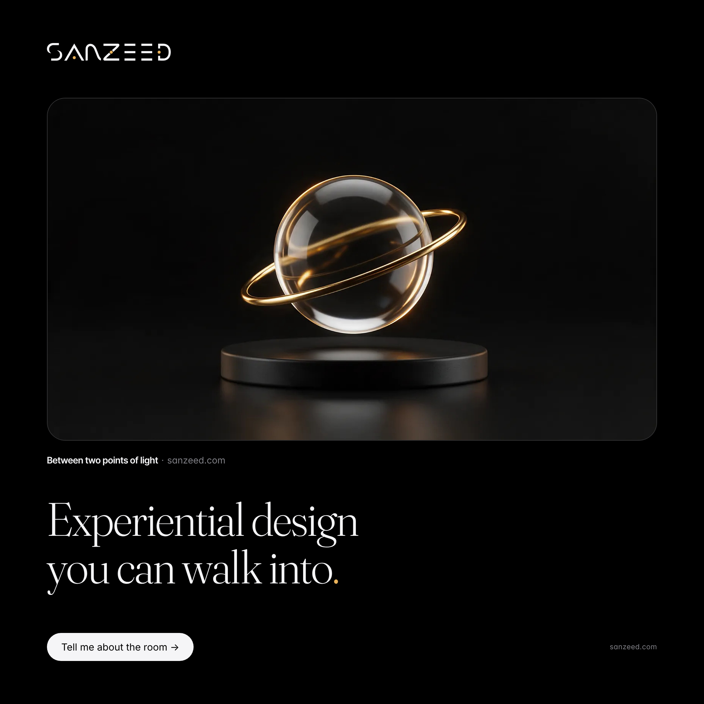

sanzeedSponsored
···
See the work
sanzeed Experiential design you can walk into. Museums, experience centres, pavilions and projection shows — one vision, from the brief to opening night. sanzeed.com

sanzeed Experiential design you can walk into. Museums, experience centres, pavilions and projection shows — one vision, from the brief to opening night. sanzeed.com